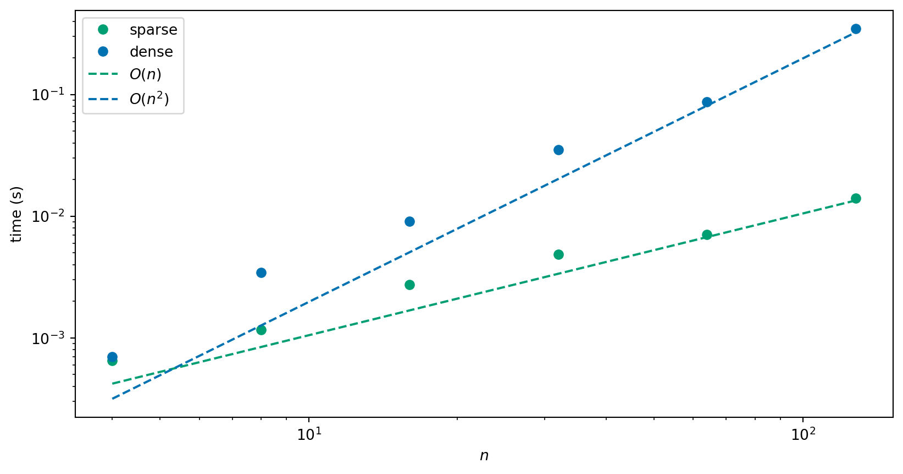

Apply direct and iterative solvers to solve systems of linear equations; implement methods using floating point numbers and investigate computational cost using computer experiments.
Chapter 5
Iterative methods
In the previous section we looked at what are known as direct methods for solving systems of linear equations. They are guaranteed to solve with a fixed amount of work (we can even prove this in exact arithmetic!), but this fixed amount of work may be very large.
For a general \(n \times n\) system of linear equations \(A \vec{x} = \vec{b}\), the computation expense of all direct methods if \(O(n^3)\). The amount of storage required for these approaches is \(O(n^2)\) which is dominated by the cost of storing the matrix \(A\). As \(n\) becomes larger the storage and computation work required limit the practicality of direct approaches.
Iterative methods
As an alternative, we will propose some iterative methods.
Iterative methods produce a sequence \((\vec{x}^{(k)})\) of approximations to the solution of the linear system of equations \(A \vec{x} = \vec{b}\).
The iteration is defined recursively and is typically of the form: \[
\vec{x}^{(k+1)} = \vec{F}(\vec{x}^{(k)}),
\] where \(\vec{x}^{(k)}\) is now a vector of values and \(\vec{F}\) is some vector function
Iterative method choices
We will need to define
choose a starting value \(\vec{x}^{(0)}\)
the function \(\vec{F}\)
we still need to decide when we need to stop!
Remark 1. We use a value in brackets in the superscript to denote the iteration number to avoid confusion between the iteration number and the component of the vector: \[
\vec{x}^{(k)} = (\vec{x}^{(k)}_1, \vec{x}^{(k)}_2, \ldots, \vec{x}^{(k)}_n).
\]
Some terrible examples
These are examples of potential iterative methods which would not work very well!
Consider
\[
\vec{F}(\vec{x}^{(k)}) = \vec{x}^{(k)}.
\]
Each iteration is very cheap to compute but very inaccurate – it never converges!
Each iteration is very expensive to compute – you have to invert \(A\)! – but it converges in just one step since
\[
\begin{aligned}
A \vec{x}^{(k+1)} & = A \vec{x}^{(k)} + A A^{-1} (\vec{b} - A \vec{x}^{(k)})
\\
& = A \vec{x}^{(k)} + \vec{b} - A \vec{x}^{(k)} \\
& = \vec{b}.
\end{aligned}
\]
General formula
We will construct iterations with
\[\begin{equation}
\label{eq:general-iteration}
\vec{F}(\vec{x}^{(k)}) = \vec{x}^{(k)} + P (\vec{b} - A \vec{x}^{(k)}).
\end{equation}\]
for some matrix \(P\) such that
\(P\) is easy to compute, or the matrix-vector product \(\vec{r} \mapsto P
\vec{r}\) is easy to compute (we call \(\vec{b} - A \vec{x}^{(k)} = \vec{r}\) the residual.),
\(P\) approximates \(A^{-1}\) well enough that the algorithm converges in few iterations.
Note that the above bad examples could be written in the form of \(\eqref{eq:general-iteration}\) with \(P = O\) (the zero matrix) or \(P = A^{-1}\).
Jacobi iteration
One straightforward choice for \(P\) in \(\eqref{eq:general-iteration}\) is given by the Jacobi method where we take \(P = D^{-1}\) where \(D\) is the diagonal of \(A\): \[
D_{ii} = A_{ii} \quad \text{and} \quad D_{ij} = 0 \text{ for } i \neq j.
\]
The Jacobi iteration is given by
\[
\vec{x}^{(k+1)} = \vec{x}^{(k)} + D^{-1}(\vec{b} - A \vec{x}^{(k)})
\]
Jacobi iteration
\(D\) is a diagonal matrix, so \(D^{-1}\) is trivial to form (as long as the diagonal entries are all non-zero): \[
(D^{-1})_{ii} = \frac{1}{D_{ii}}
\quad \text{and} \quad
(D^{-1})_{ij} = 0 \text{ for } i \neq j.
\]
Update formula (Jacobi)
Given \(\vec{x}^{(k)}\), find \(\vec{x}^{(k+1)}\):
Take two iterations of Jacobi iteration to approximate the solution of the following system using the initial guess \(\vec{x}^{(0)} = (1, 1)^T\): \[
\begin{pmatrix}
2 & 1 \\ -1 & 4
\end{pmatrix}
\begin{pmatrix}
x_1 \\ x_2
\end{pmatrix}
=
\begin{pmatrix}
3.5 \\ 0.5
\end{pmatrix}
\]
Rewriting Jacobi iteration
We note that we can also slightly simplify the way the Jacobi iteration is written. We can expand \(A\) into \(A = L + D + U\), where \(L\) and \(U\) are the parts of the matrix from below and above the diagonal respectively: \[
L_{ij} = \begin{cases}
A_{ij} &\quad \text{if } i < j \\
0 &\quad \text{if } i \ge j,
\end{cases}
\qquad
U_{ij} = \begin{cases}
A_{ij} &\quad \text{if } i > j \\
0 &\quad \text{if } i \le j.
\end{cases}
\]
Consider the system \(A \vec{x}= b\) with the matrix \(A\) split as \(A = L + D + U\), where \(D\) is the diagonal of \(A\), \(L\) contains the elements below the diagonal, and \(U\) contains the elements above the diagonal. The componentwise iteration above can be written in matrix form as \[
\vec{x}^{(k+1)} = \vec{x}^{(k)} + (D + L)^{-1} (\vec{b} - A \vec{x}^{(k)}).
\] That is, we use \(P = (D+L)^{-1}\) in \(\eqref{eq:general-iteration}\).
In general, we do not form the inverse of \(D + L\) explicitly here since it is more complicated to do so than simply computing the inverse of \(D\).
Example
Take two iterations of Gauss-Seidel iteration to approximate the solution of the following system using the initial guess \(\vec{x}^{(0)} = (1, 1)^T\):
Take one iteration of (a) Jacobi iteration; (b) Gauss-Seidel iteration to approximate the solution of the following system using the initial guess \(\vec{x}^{(0)} = (1, 2, 3)^T\):
Sparse matrices are prevalent in any application which relies on some form of graph structure (see both the temperature and traffic network examples).
The \(a_{ij}\) typically represents some form of “communication” between vertices \(i\) and \(j\) of the graph, so the element is only nonzero if the vertices are connected.
There is no generic pattern for these entries, though there is usually one that is specific to the problem solved.
Sparse matrices
Usually, \(a_{ii} \neq 0\) - the diagonal is nonzero.
A “large” portion of the matrix is zero.
A full \(n \times n\) matrix has \(n^2\) nonzero entries.
A sparse \(n \times n\) has \(\alpha n\) nonzero entries, where \(\alpha \ll
n\).
Sparse Matrices
There are two main ways in which sparse matrices can be exploited in order to obtain benefits within iterative methods.
The storage can be reduced from \(O(n^2)\).
The cost per iteration can be reduced from \(O(n^2)\).
Storing a spare matrix
The simplest way in which a sparse matrix is stored is using three arrays:
an array of floating point numbers (A_real say) that stores the non-zero entries;
an array of integers (I_row say) that stores the row number of the corresponding entry in the real array;
an array of integers (I_col say) that stores the column numbers of the corresponding entry in the real array.
This requires just \(3 \alpha n\) units of storage - i.e. \(O(n)\). This is called the COO (coordinate) format.
Working with a sparse matrix
Given the above storage pattern, the following algorithm will execute a sparse matrix-vector multiplication (\(\vec{z} = A \vec{y}\)) in \(O(n)\) operations:
z = np.zeros((n, 1))for k inrange(nonzero): z[I_row[k]] = z[I_row[k]] + A_real[k] * y[I_col[k]]
Here nonzero is the number of non-zero entries in the matrix.
Note that the cost of this operation is \(O(n)\) as required.
Python experiments
First let’s adapt our implementations to use this sparse matrix format:
Then we can test the two different implementations of the methods:
Now let us see how long it takes to get a solution. The following plot shows the run times of using the two different implementations of the Jacobi method, each for 10 iterations. We see that, as expected, the run time of the dense formulation is \(O(n^2)\) and the run time of the sparse formulation is \(O(n)\).

We say “as expected” because we have already counted the number of operations per iteration and these implementations compute for a fixed number of iterations. In the next section, we look at alternative stopping criteria.
Convergence of an iterative method
In general the iteration takes the form \[
\vec{x}^{(k+1)} = \vec{F}(\vec{x}^{(k)})
\] here \(\vec{x}^{(k)}\) is a vector of values and \(\vec{F}\) is some vector-valued function which we have defined.
How can we decide if this iteration has converged? We need \(\vec{x} -
\vec{x}^{(k)}\) to be small, but we do not have access to the exact solution \(\vec{x}\) so we have to do something else!
Possible stopping criteria?
A maximum number of iterations?
The change in values should be small enough?
The residual should be small enough?
What is a small vector?
The Euclidean norm, or norm for short, is defined to be the square root of the sum of squares of the entries of the array: \[
\| \vec{r} \| = \sqrt{ \sum_{i=1}^n r_i^2 }.
\] where \(\vec{r}\) is a vector with \(n\) entries.
Examples
Consider the following sequence \(\vec{x}^{(k)}\):